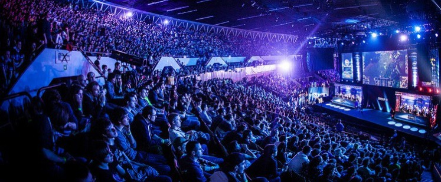
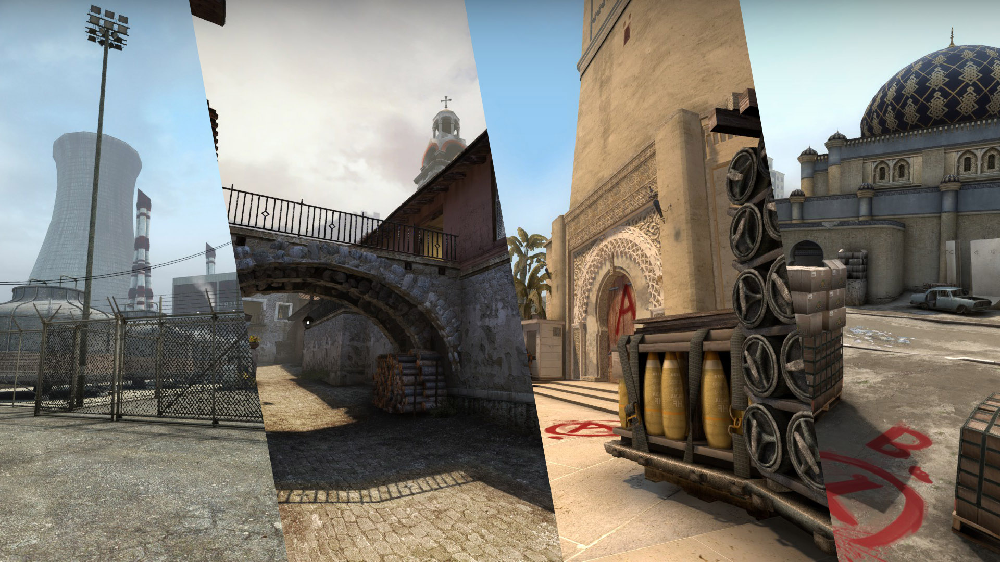

Le 4 septembre 2011, Valve à exposé les versions pour Xbox 360(Penny Arcade Expo) et PlayStation 3(EGX (expo)). Une version bêta fermée est mise en ligne le 30 novembre 2011. Une version bêta ouverte, accessible aux joueurs ayant acheté le jeu, est mise en ligne le 14 août 2012. Le jeu est sorti le 21 août 2012. Le 21 mars 2013, les cartes de type Counter-Strike subissent de gros changements. Le nombre d'otages passe de 4 à 2, ils ne suivent plus le joueur mais doivent être portés par ce dernier. Récupérer un otage prends désormais 4 secondes, ramené à 1 seconde si le kit de récupération (un nouvel équipement apporté par la mise à jour) est acheté. Il suffit pour les antiterroristes de ramener un seul des deux otages pour remporter la manche. À noter que la mise à jour ajoute une nouvelle carte de type Counter-Strike : cs_militia.
La scène du sport électronique sur Counter-Strike : Global Offensive commença doucement, avec quelques tournois mineurs milieu 2012 comme la « Go4CS:GO Cup » qui est une série de plusieurs tournois en ligne ayant eu lieu tout au long de l'année 2012. Le premier tournoi en LAN fut « Steelseries GO 2012 », où seules huit équipes, toutes suédoises, ont pu participer. La finale eut lieu entre BuggIT et Ninjas in Pyjamas, ces derniers gagnant le tournoi sur le score de 2-0. S'agissant du premier tournoi en LAN, avec peu d'équipes, toutes originaires du même pays ainsi que presque aucun grand nom des scènes professionnelles de Counter-Strike et Counter-Strike: Source présents à l'évènement, il est difficile de considérer ce tournoi comme un tournoi majeur. Counter-Strike: Global Offensive est représenté sur la scène internationale du sport électronique pour la première fois à la « DreamHack Valencia 2012 » qui a eu lieu du 21 au 22 septembre 2012. La finale a opposé l'équipe Ninjas in Pyjamas (NiP) à l'équipe VeryGames (VG). Les suédois se sont imposés 2-0. À noter que ce tournoi possédait une variété de nationalités assez limitée, ainsi que peu de grosses équipes.
Le jeu est divisé en huit modes, qui sont les suivants : Occasionnel, Démolition, Sniper volant, Match à mort par équipe, Course à l'armement, Zone de Danger, Compétitif et Wingman.
Occasionnel: Ce mode est destiné aux débutants, aux joueurs peu familiarisés avec les concepts de Counter-Strike, ou aux joueurs souhaitant jouer rapidement sans devoir s'investir pleinement dans la partie. En Occasionnel, Le tir ami est désactivé, ce qui permet aux joueurs de ne pas faire de "Team Kill" ou "TK" (terme employé pour désigner le fait de blesser ou tuer un coéquipier). De plus, la collision des joueurs est désactivée, ce qui signifie que les joueurs n'ont pas à se soucier de gêner les mouvements de leurs coéquipiers, chacun des joueurs étant incorporel. En termes d'équipement, le joueur reçoit en début de manche une armure complète (protégeant le corps et la tête). Si le joueur est antiterroriste, il reçoit également un kit de désamorçage. Chaque joueur commence la partie avec 1 000 $ et ne peut accumuler que jusqu'à 10 000 $.
Démolition: Un mode spécifique à Counter-Strike: Global Offensive. Il se joue également à 5 contre 5, sur des cartes de type "Defuse" créées spécialement pour ce mode. L'objectif pour les terroristes est de faire exploser la bombe, et pour les antiterroristes de la désamorcer Aucun achat ne peut être fait dans ce mode. Une arme et un couteau sont donnés à chaque joueur au début de chaque manche. L'arme reçue dépend d'une liste de 10 armes imposées, liste qui diffère légèrement en fonction du camp dans lequel le joueur se trouve. Chaque joueur ne dispose que d'une seule arme à feu. Les joueurs ne peuvent pas lâcher leur arme, et lorsqu'un joueur meurt, son arme disparaît, il est donc impossible de récupérer une autre arme que celle imposée par la liste. Lorsqu'un joueur tue un adversaire, il passe à l'arme suivante à la prochaine manche. S'il tue plus d'un adversaire, il dispose d'une grenade aléatoire à la prochaine manche. La liste suit un ordre spécifique, les joueurs savent donc quelle arme ils auront à la prochaine manche (dans le cas où ils tuent quelqu'un). S'ils ne font aucune victime pendant la manche, ils conserveront leur arme actuelle à la manche suivante. La partie se déroule en 20 manches, la première équipe à gagner 11 manches remporte le match. Il n'y a pas de prolongation en cas d'égalité. Changement de camp à la fin de la 10e manche. Les joueurs sont tous équipés d'une armure complète (ainsi que d'un kit de désamorçage pour les antiterroristes) au début de chaque manche. Le tir ami est désactivé ainsi que la collision entre joueurs. Des bots viendront compléter la partie s'il y a moins de 10 joueurs. Les terroriste doivent se rendre sur la zone A, B (ou sur certaine carte C) et poser la bombe (la C4) après que la bombe soit posée elle explosera dans 40 secondes.Il faut s’éloigner de la bombe pour pas que vous mourez (les antiterroristes peuvent être tuée en la désamorçant).
Sniper volant: Chaque équipe possède un snipe et le dernier en vie remporte la victoire pour son équipe.
Match à mort par équipe: Un mode déjà présent sur les anciennes versions de Counter-Strike, bien que les règles soient légèrement différentes sur Counter-Strike: Global Offensive. Il n'existe pas de notion d'équipe dans ce mode, bien que les camps terroristes et antiterroristes soient toujours présents. Chaque joueur doit tuer un plus grand nombre d'adversaire afin de gagner des points. Le joueur avec le plus de points à la fin du temps imparti gagne.Il n'y a pas d'argent dans ce mode. Cependant, les achats d'armes peuvent être faits normalement (pas de grenade ou d'équipement), et ce sans limite de budget. En début de partie et après chaque mort,le joueur reçoit une arme principale aléatoire et une arme secondaire aléatoire (cette option peut être désactivée en pressant la touche f3). Les joueurs sont ressuscités immédiatement après leur mort. Ils sont ressuscités aléatoirement sur la carte et disposent d'une période d'invulnérabilité à chaque résurrection. Pendant cette période, ils peuvent acheter n'importe quelle arme ou pistolet, si ceux dont ils disposent ne leur conviennent pas. Régulièrement durant la partie, des périodes bonus limitées dans le temps surviennent. Elles affichent le nom d'une arme ou d'un pistolet aléatoirement choisi, ainsi que le nombre de points bonus. Chaque adversaire tué grâce à cette arme accorde le nombre de points bonus affiché. Le tir ami est désactivé. Ce mode se joue habituellement à 10 joueurs. Des bots viendront compléter la partie s'il y a moins de 10 joueurs.
Course à l'armement: Déjà présent sur les anciennes versions de Counter-Strike, bien que les règles soient légèrement différentes sur Counter-Strike: Global Offensive. Il n'existe pas de notion d'équipe dans ce mode, bien que les camps terroristes et antiterroristes soient toujours présents. Le but, pour chaque joueur, est de parcourir la liste des armes imposées en tuant un adversaire avec chacune d'entre elle. La dernière arme est le couteau d'or, et permet au joueur qui fait une victime avec de gagner la partie.Les armes et l'ordre des armes sont les mêmes pour tous les joueurs. Une seule arme à feu disponible à la fois, ainsi que le couteau normal. À l'exception du fait qu'il soit doré et accorde la victoire en cas de frag, le couteau d'or se comporte exactement comme un couteau normal, et inflige les mêmes dommages. Lorsqu'un joueur élimine deux adversaires ou le premier de l'équipe ennemie, il passe à l'arme suivante instantanément. Si un joueur tue plusieurs adversaires avec une seule balle de son arme, il saute une arme. Si un joueur meurt par suicide (chute par exemple), ou est tué à l'aide du couteau normal, il retourne à l'arme précédente. Il y a 16 armes à utiliser, couteau d'or inclus. Le tir ami et la collision sont désactivé. La partie se joue à 10 joueurs. Des bots viendront compléter la partie s'il y a moins de 10 joueurs.
Zone de Danger : Ce mode a été ajouté le 6 décembre 2018 lors de la mise à jour Free to play du jeu. Il s'agit d'un mode 'battle royale' où les joueurs s'affrontent sur 2 cartes: Blacksite et Sirocco. Les parties en solitaire débutent avec 16 joueurs tandis que les parties en duo ou en trio sont jouées avec jusqu'à 18 participants.Au début de la partie, les joueurs doivent sélectionner sur la carte où ils souhaitent être héliportés et sélectionner un bonus. Lorsque tous les joueurs ont décidé, ils sont parachutés au-dessus de l'emplacement choisi. Ils doivent ensuite chercher des armes, munitions et de l'équipement en se baladant sur la carte dans le but de s’entre-tuer jusqu'à ce qu'il ne reste qu'une seule équipe survivante. La zone jouable se réduit progressivement au fil de la partie et les joueurs se trouvant en dehors de cette zone se voient infliger des dégâts, les obligeants à se déplacer jusqu'à la zone jouable afin de ne pas mourir. Le mode conserve la nécessité de prendre des décisions monétaires typiques de Counter-Strike. Les joueurs accumulent de l'argent en récupérant les liasses de billets réparties sur la carte, en transportant des otages jusqu'à une des zones d'extraction, exécuter une cible prioritaire. Les sommes accumulées permettent aux joueurs d'acheter des armes, équipements et soins via leur tablette électronique. Les objets achetés sont ensuite délivrés par drones qui peuvent être interceptés par d'autres joueurs. La tablette permet également d'accéder à la carte, divisée en tuiles hexagonales. Les tuiles deviennent rouges lorsqu'elles sont hors de la zone de jeu et jaunes si au moins un joueur s'y trouve. Une ligne rouge est affichée pour indiquer la prochaine restriction de zone jouable tandis qu'un trait bleu prévient le joueur du trajet que ses drones sont en train de faire pour lui apporter ses achats.
Compétitif : Ce mode est destiné aux joueurs confirmés, connaissant déjà bien les principes du jeu, et ayant la volonté de s'investir au maximum dans la partie pour garantir la victoire à leur équipe.Contrairement au mode Occasionnel, le tir ami et la collision sont activés. Chaque joueur commence avec 800 $ et peut accumuler jusqu'à 16 000 $. L'armure et le kit de désamorçage doivent être achetés. Le nombre de manches est limité à 30, sans prolongation en cas d'égalité. Changement de camp à la fin de la 15e manche. Une file d'attente est prévue avant le commencement de la partie. Elle permet de sélectionner des joueurs approximativement de même niveau et dans une zone géographique la plus petite possible. Cela évite à certains joueurs de se retrouver avec une latence trop importante, ce qui les désavantagerait. Il existe un système de rangs qui ne concerne que les modes Compétitif et Wingman. Ils sont destinés à classer les joueurs selon leur niveau, et ce en fonction des résultats qu'ils obtiennent pendant leurs matchs. Il faut au minimum 10 victoires en Compétitif pour obtenir un rang (avant d'avoir un rang vous serez pénalisés toutes les deux victoires en mode compétitif). Plus un joueur fait de matchs (de préférence régulièrement), et plus le rang est fiable 3. Malgré cela, il persiste de joueurs utilisant des cheats et ce qu'on appelle des "smurfs", deuxième compte de joueurs ayant pour but d'avoir un rang plus bas que celui de son premier compte, afin d'avoir plus de chances de gagner, et aussi de se payer la tête des joueurs aux rangs bas. Enfin, il existe un système de pénalité en cas de déconnexion d'un joueur pendant la partie, après trois minutes de temps disponible pour se reconnecter. En effet, si un joueur quitte et abandonne une partie en mode Compétitif avant la fin de cette dernière, il reçoit un time-out (une période durant laquelle il ne peut plus jouer en Compétitif). Ceci a été mis en place afin de garantir l'aspect compétitif de ce mode. Un avertissement sur cet engagement à finir une partie commencée est affiché au joueur pendant le temps d'attente.
Wingman: Ce mode est destiné aux débutants ainsi qu'aux joueurs confirmés et se joue en 2 contre 2 sur des cartes compactes. C'est un mode compétitif sur des cartes de types "defuse" en 9 manches gagnantes, soit 16 manches maximum. Tout comme pour le mode compétitif, il n'y a pas de mode otage et il y a un rang spécifique llant d'Argent 1 à Elite mondial. Les cartes pour ce mode de jeu sont très limitées, elles sont optimisées pour le 2 contre 2 donc se jouant sur un seul objectif, contraire au mode compétitif de base. Les cartes sont : Inferno, Shortdust, Cobblestone, Overpass, Train, Rialto, Lake, Nuke et Vertigo. Chaque joueur commence avec 800 $ et peut accumuler jusqu'à 8 000 $. L'armure et le kit de désamorçage doivent être achetés.
Carte Officielle: Les cartes dites "officielles" sont les cartes créées par les développeurs du jeu. Dans Counter-Strike: Global Offensive, elles sont au nombre de 26 : ar_baggage, ar_shoots, ar_lake, ar_safehouse, cs_assault, cs_militia, cs_italy, cs_office, cs_agency de_shortdust, de_dust2, de_cache, de_nuke, de_inferno, de_train, de_overpass, de_rialto, de_shorttrain, de_bank, de_safehouse, de_lake, de_cobblestone, et de_canals.